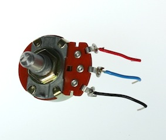
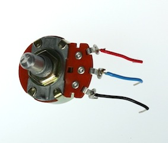

Building for Wonder
Kawandeep Virdee • @whichlight


sprout!

wonder
captivate the imagination

wonder is
inviting
draws exploration
engaging
immersive
interactive
meaningful
Alex Beim, Tangible Interaction, at INST-INT
Small steps in hardware open up a lot of possibilities
 


Wonder for the maker
for the viewer
for the space
Works to explore interaction and wonder
I. Bottle Synth
II. A Giant Blue Magnetic Planet


III. Sound to Light
IV. Hacking an Existing Public Art Piece


Color Distribution
197 Red
194 Blue
136 Green
121 Fish
97 Cyan
93 Yellow
87 Rainbow
79 Pink
78 Purple
71 Orange
66 Lime
59 White
45 Salmon
43 Black
41 Myrtle
40 Puce
35 Teal
33 Aqua
32 Azure
29 Brown
28 Peach
26 red
Fish Distribution
40 +1618
18 +1617
16 +1802
16 +1603
12 +1646
6 +1917
6 +1802
5 +1603
4 +1541
4 +1207
3 +1774
1 +1978
1 +1702
1 +1508
V. Internet into Art
You're awesome web developers
Bring the interactivity and collaboration of the web into objects


There is so much wonder in making.
Interactivity helps cultivate it further.
new ways to know one another
new ways to make spaces inviting
new ways to find joy.
thanks
with
Free free to get in touch to riff on ideas and possibilities! I'd love to hear what want to make, and am happy to help think of ways to inspire wonder, make it openly, and make it public.